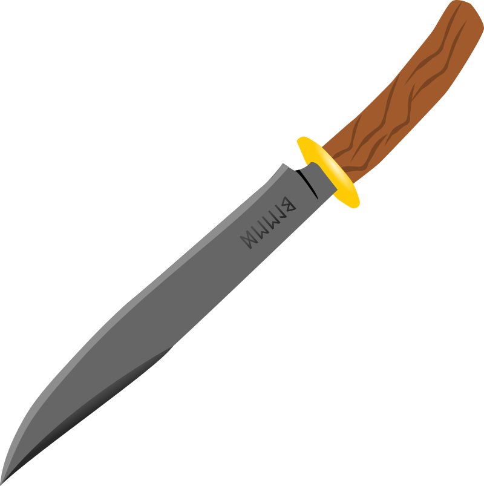
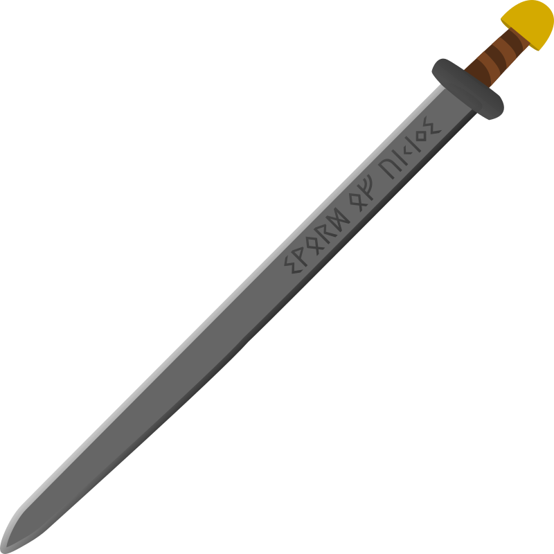
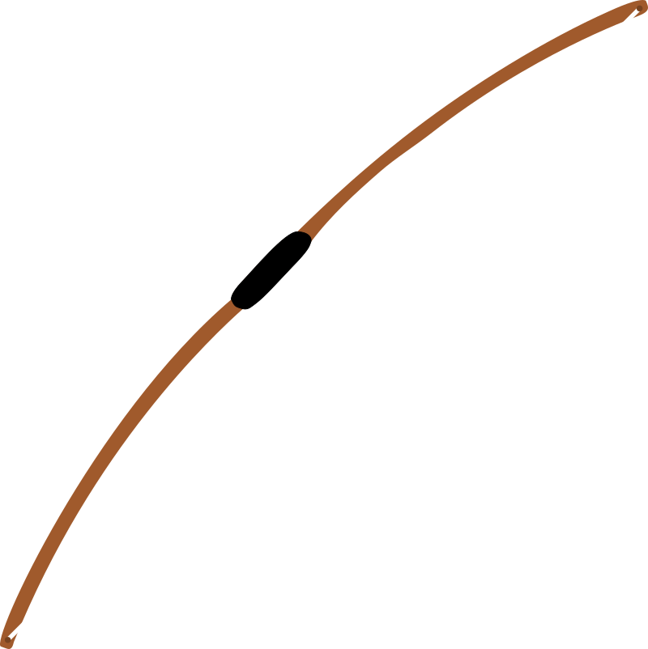

WEAPONS
Axe

The Viking axe was a very common weapon. Everyone owned a wood cutting axe that could be used as a dangerous weapon. Other axes were designed specifically for war.
Knife
Typically the Norsemen were associated with their famous axes, but, truth be known, they also carried a knife that saw more general use.
Sword
Early Viking swords were made of pure iron, and were known to bend in battle. Later Viking swords, either locally produced or bought, were made by pattern welding, a sophisticated technique in which numerous thin strips of metal are interwoven together at high heat to create a stronger blade.
Bow
The original Hedeby bow was found in the area of the Viking town of Hedeby, which now lies in northern Germany (Haithabu). The discoveries there have been dated to around 800-1000 CE.